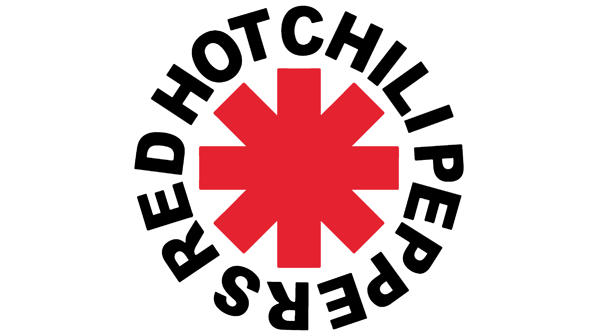
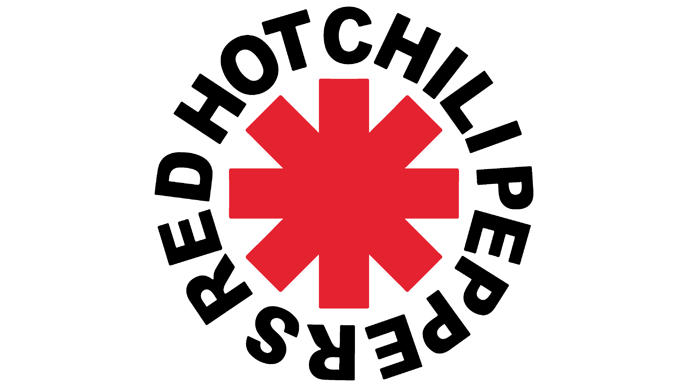

Flea
 

Flea, is an American musician and actor. He is a founding member and bassist of the rock band Red Hot Chili Peppers (RHCP) and, along with vocalist Anthony Kiedis, the only member to appear on every RHCP album.
Flea has been considered one of the greatest bassists of all time, with Greg Tate of Rolling Stone saying "if there were a Most Valuable Bass Player award given out in rock, Flea could have laid claim to that bitch ten years running".
Pulling on influences like Larry Graham, the former bass player for Sly and the Family Stone, Flea combined the slap bass method Graham created, with the West Coast punk sound. The foundation of Flea’s bass playing comes from this slapping technique. Which involves aggressively slapping the bass with your thumb rather than plucking at it, and makes for a more percussive and heavier sound. Flea took this not unusual way to play bass and merged it with the punk way of playing bass, which is super fast. So Flea begun slapping fast, and that created a very distinctive sound that become associated with and recognisable as the Red Hot Chili Peppers. Their hit song “Higher Ground” from 1989’s Mother’s Milk is just one of many examples of this.
Californication - Red Hot Chilli Peppers
Duff McKagan
McKagan played bass for twelve years in the hard rock band Guns N' Roses, with whom he achieved worldwide success in the late 1980s and early 1990s. Prior to joining Guns N’ Roses, Duff McKagan had barely touched a bass. He was an ex-guitarist and ex-drummer who had come up in Seattle’s early-Eighties punk scene, and the combo of his background and his raw approach to playing gave Guns N’ Roses songs like “It’s So Easy” and “You Could Be Mine” a rough edge.
To learn the instrument, McKagan binged on the bass lines of Prince (“I loved that R&B rhythm,” he once said), Zeppelin’s John Paul Jones, the Clash’s Paul Simonon, Motörhead’s Lemmy Kilmister, and, most surprising, Barry Adamson of the postpunk group Magazine. “In Magazine, those bass lines were so pronounced, he had the chorus pedal on the bass,” McKagan once said, referring to a device that gives the instrument a glassy, almost hollow sound, “and that’s really where I grabbed the chorus pedal for Guns.” That secret weapon helped McKagan push his bass to the forefront on Appetite for Destruction and the Use Your Illusion LPs, equaling the musicality of Slash and the grit of Axl Rose, making him an integral part of the band’s sound, and hard rock in the Eighties and Nineties — even if he’s unaware of his influence. “I don’t know where I’m rated,” he once said. “I don’t pay attention to that. I’m really so just all into my craft.”
Sweet Child O' Mine - Guns N' Roses
Cliff Burton
Clifford Burton was an American musician who was the bassist for Metallica from 1982 until his death in 1986. He performed on the band's first three albums, Kill 'Em All, Ride the Lightning, and Master of Puppets.
When Metallica formed, all James Hetfield, Dave Mustaine, and Lars Ulrich wanted to do was rage on finger-breaking thrash metal — until they met Cliff Burton. The bassist had been playing with a rival metal group, and when they saw him play a jaw-dropping bass solo, they wanted him in Metallica so badly that they relocated from Los Angeles to his native Bay Area at his request.